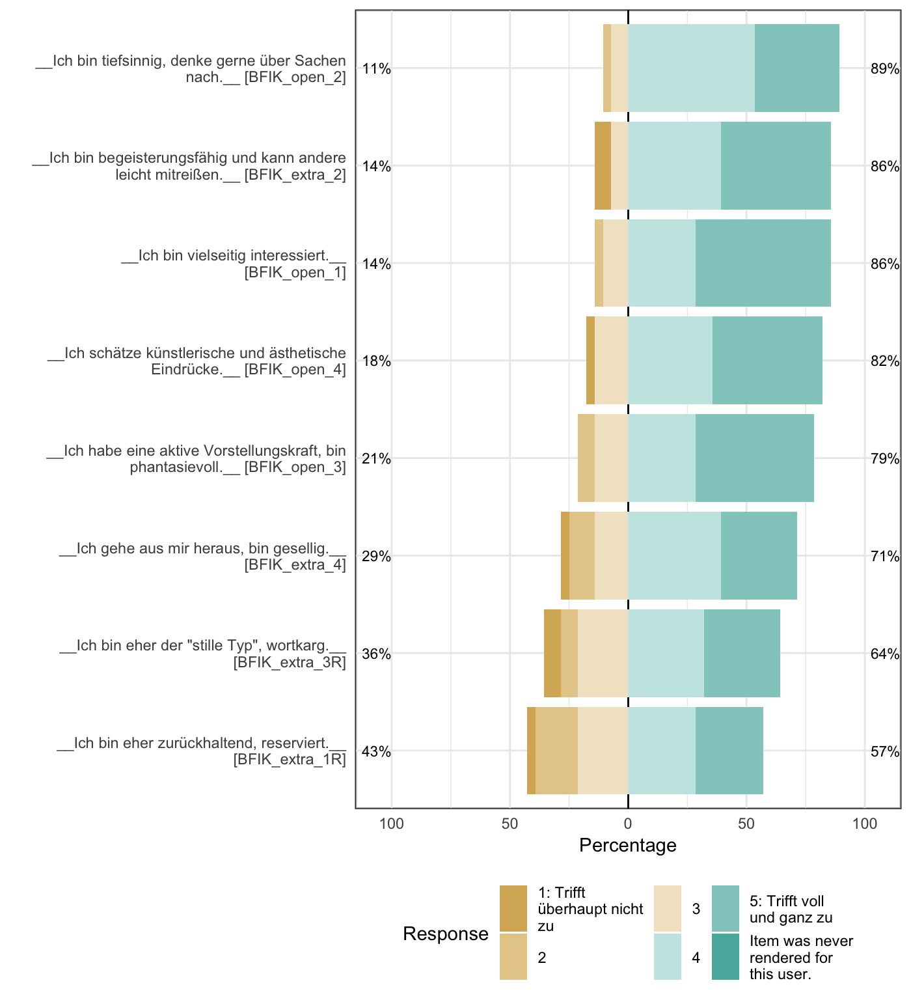
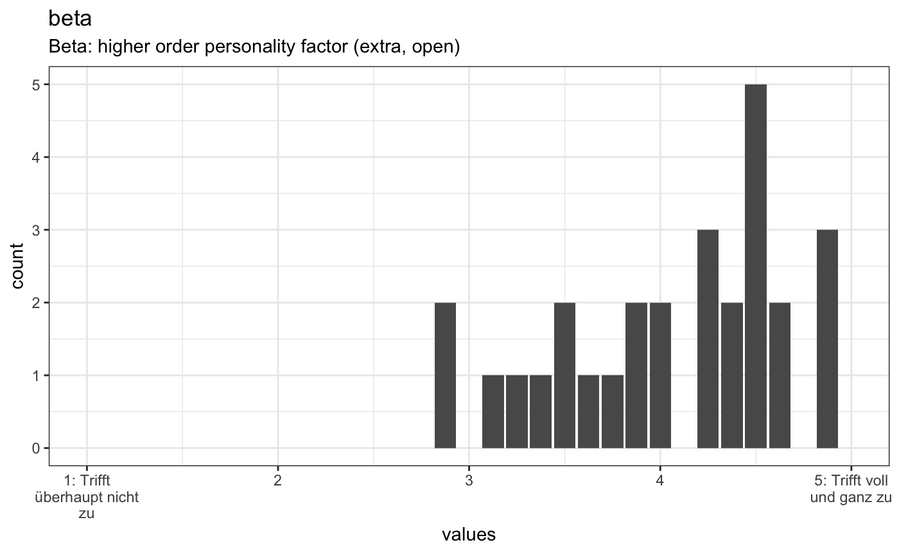
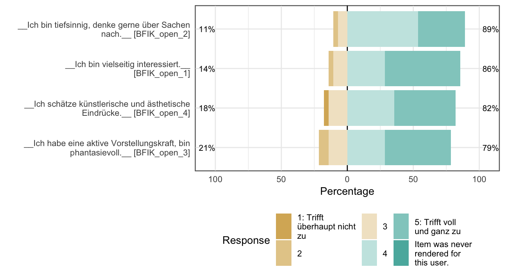

Codebook example with nested scales
Ruben Arslan
2018-09-13
Source:vignettes/codebook_nested_scale.Rmd
codebook_nested_scale.Rmdknit_by_pkgdown <- !is.null(knitr::opts_chunk$get("fig.retina"))
knitr::opts_chunk$set(warning = TRUE, message = TRUE, error = TRUE, echo = TRUE)
pander::panderOptions("table.split.table", Inf)
ggplot2::theme_set(ggplot2::theme_bw())
library(codebook)
library(dplyr)
data("bfi", package = 'codebook')Sometimes, we have scales that incorporate other scales. For example, some researchers derive the “Big Two” Alpha and Beta can be derived by averaging the lower-order “Big Five”. Here, we just demonstrate how additional scales relying on the same items as lower-order scales can be added in the codebook package. The procedure is the same, irrespective of whether scales already exist. We use the same mock BFI dataset from the main vignette here.
Here, we use the function aggregate_and_document_scale to build the “alpha” scale. We assign alpha to a new colum in the data frame and we pass the constituent items as a data.frame to the function on the right-hand side. Because alpha relates to emotional stability, not neuroticism, we reverse the neuroticism items before averaging them with the rest.
bfi$alpha <- aggregate_and_document_scale(bfi %>%
select(starts_with("BFIK_agree_"), starts_with("BFIK_consc_"), starts_with("BFIK_neuro_")) %>%
mutate_at(vars(starts_with("BFIK_neuro_")), reverse_labelled_values))Alternatively, we can do the same thing using dplyr syntax. Because of some limitation in the dplyr syntax, we either explicitly name the data frame and pipe it in, or we choose not to pipe it and can use the shorthand . to refer to the currently used data frame.
bfi <- bfi %>% mutate(
alpha = aggregate_and_document_scale(bfi %>%
select(starts_with("BFIK_agree_"), starts_with("BFIK_consc_"), starts_with("BFIK_neuro_")) %>%
mutate_at(vars(starts_with("BFIK_neuro_")), reverse_labelled_values)
))
bfi <- bfi %>% mutate(beta = aggregate_and_document_scale(select(. ,
starts_with("BFIK_extra_"), starts_with("BFIK_open_"))))We then use the function var_label from the labelled package to give the scale an informative name, because the default name is just the common stem of the aggregated items. In this case, that would be the misleading abbreviation BFIK.
## [1] "11 BFIK items aggregated by rowMeans"var_label(bfi$alpha) <- "Alpha: higher order personality factor (consc, neuro, agree)"
var_label(bfi$beta) <- "Beta: higher order personality factor (extra, open)"To keep things short, we omit the alpha scale.
bfi <- bfi %>% select(beta, starts_with("BFIK_extra"), starts_with("BFIK_open"))
if (!knit_by_pkgdown) knitr::opts_chunk$set(echo = FALSE)codebook(bfi, survey_repetition = 'single',
metadata_table = knit_by_pkgdown, metadata_json = knit_by_pkgdown)## Warning in psych::alpha(as.data.frame(results[, scale_item_names]), title = scale_name, : Some items were negatively correlated with the total scale and probably
## should be reversed.
## To do this, run the function again with the 'check.keys=TRUE' option## Some items ( BFIK_open_2 BFIK_open_4 ) were negatively correlated with the total scale and
## probably should be reversed.## To do this, run the function again with the 'check.keys=TRUE' option## No missings.Metadata
Description
The dataset has N=28 rows of which n=28 have no missings and a total of 11 columns.
Variable names
beta, BFIK_extra_2, BFIK_extra_3R, BFIK_extra_4, BFIK_extra_1R, BFIK_extra, BFIK_open_2, BFIK_open_1, BFIK_open_4, BFIK_open_3, BFIK_openThis dataset was automatically described using the codebook R package.
if (is_attribute_set("temporalCoverage", results)) {
glue::glue(
"- __Temporal Coverage__: [{url}](url)",
.envir = meta)
}if (is_attribute_set("spatialCoverage", results)) {
glue::glue(
"- __Spatial Coverage__: [{url}](url)",
.envir = meta)
}if (is_attribute_set("citation", results)) {
glue::glue(
"- __Citation__: {citation}",
.envir = meta)
}Items
Scale: beta
Overview
Reliability: Cronbach’s α [95% CI] = 0.73 [0.58;0.87].
Missings: 0.
old_height <- knitr::opts_chunk$get("fig.height")
new_height <- length(scale_info$scale_item_names)
new_height <- ifelse(new_height > 20, 20, new_height)
new_height <- ifelse(new_height < 1, 1, new_height)
new_height <- ifelse(is.na(new_height) | is.nan(new_height),
old_height, new_height)
knitr::opts_chunk$set(fig.height = new_height)
dist_plot <- plot_labelled(scale, scale_name, wrap_at)
choices <- attributes(items[[1]])$item$choices
breaks <- as.numeric(names(choices))
if (length(breaks)) {
suppressMessages( # ignore message about overwriting x axis
dist_plot <- dist_plot +
ggplot2::scale_x_continuous("values",
breaks = breaks,
labels = stringr::str_wrap(unlist(choices), 15)) +
ggplot2::expand_limits(x = range(breaks)))
}
dist_plot
Reliability details
for (i in seq_along(reliabilities)) {
rel <- reliabilities[[i]]
cat(knitr::knit_print(rel, indent = paste0(indent, "####")))
}95% Confidence Interval
if (!is.null(x$total$ase)) {
pander::pander(data.frame(lower = x$total$raw_alpha - 1.96 * x$total$ase,
estimate = x$total$raw_alpha,
upper = x$total$raw_alpha + 1.96 *
x$total$ase))
}| lower | estimate | upper |
|---|---|---|
| 0.5814 | 0.7263 | 0.8712 |
| raw_alpha | std.alpha | G6(smc) | average_r | S/N | ase | mean | sd | median_r |
|---|---|---|---|---|---|---|---|---|
| 0.7263 | 0.6966 | 0.8329 | 0.223 | 2.295 | 0.07394 | 4.054 | 0.5994 | 0.1509 |
Reliability if an item is dropped:
| raw_alpha | std.alpha | G6(smc) | average_r | S/N | alpha se | var.r | med.r | |
|---|---|---|---|---|---|---|---|---|
| BFIK_extra_2 | 0.6509 | 0.6178 | 0.7809 | 0.1876 | 1.617 | 0.09776 | 0.09262 | 0.1423 |
| BFIK_extra_3R | 0.6448 | 0.6222 | 0.7701 | 0.1904 | 1.647 | 0.1005 | 0.07944 | 0.1423 |
| BFIK_extra_4 | 0.6269 | 0.6003 | 0.7317 | 0.1766 | 1.502 | 0.1052 | 0.0757 | 0.1423 |
| BFIK_extra_1R | 0.6554 | 0.6356 | 0.7428 | 0.1995 | 1.744 | 0.09727 | 0.06597 | 0.1423 |
| BFIK_open_2 | 0.7571 | 0.7393 | 0.8598 | 0.2883 | 2.835 | 0.06734 | 0.1007 | 0.2626 |
| BFIK_open_1 | 0.7035 | 0.6632 | 0.8173 | 0.2195 | 1.969 | 0.08094 | 0.1189 | 0.04816 |
| BFIK_open_4 | 0.7603 | 0.7274 | 0.8122 | 0.276 | 2.668 | 0.06207 | 0.09636 | 0.2493 |
| BFIK_open_3 | 0.7349 | 0.6951 | 0.7995 | 0.2457 | 2.28 | 0.06727 | 0.1118 | 0.1948 |
Item statistics
| n | raw.r | std.r | r.cor | r.drop | mean | sd | |
|---|---|---|---|---|---|---|---|
| BFIK_extra_2 | 28 | 0.7568 | 0.7297 | 0.7088 | 0.6294 | 4.179 | 1.09 |
| BFIK_extra_3R | 28 | 0.7751 | 0.7167 | 0.7245 | 0.6382 | 3.75 | 1.206 |
| BFIK_extra_4 | 28 | 0.824 | 0.7807 | 0.812 | 0.7225 | 3.857 | 1.113 |
| BFIK_extra_1R | 28 | 0.7467 | 0.6747 | 0.7049 | 0.5987 | 3.607 | 1.197 |
| BFIK_open_2 | 28 | 0.1719 | 0.2626 | 0.09415 | 0.0182 | 4.214 | 0.7382 |
| BFIK_open_1 | 28 | 0.5412 | 0.5816 | 0.4763 | 0.4007 | 4.393 | 0.8317 |
| BFIK_open_4 | 28 | 0.2699 | 0.3199 | 0.2301 | 0.07287 | 4.214 | 0.9567 |
| BFIK_open_3 | 28 | 0.4071 | 0.4602 | 0.3799 | 0.2216 | 4.214 | 0.9567 |
Non missing response frequency for each item
rownames(x$response.freq) <- recursive_escape(rownames(x$response.freq))
pander::pander(x$response.freq)| 1 | 2 | 3 | 4 | 5 | miss | |
|---|---|---|---|---|---|---|
| BFIK_extra_2 | 0.07143 | 0 | 0.07143 | 0.3929 | 0.4643 | 0 |
| BFIK_extra_3R | 0.07143 | 0.07143 | 0.2143 | 0.3214 | 0.3214 | 0 |
| BFIK_extra_4 | 0.03571 | 0.1071 | 0.1429 | 0.3929 | 0.3214 | 0 |
| BFIK_extra_1R | 0.03571 | 0.1786 | 0.2143 | 0.2857 | 0.2857 | 0 |
| BFIK_open_2 | 0 | 0.03571 | 0.07143 | 0.5357 | 0.3571 | 0 |
| BFIK_open_1 | 0 | 0.03571 | 0.1071 | 0.2857 | 0.5714 | 0 |
| BFIK_open_4 | 0.03571 | 0 | 0.1429 | 0.3571 | 0.4643 | 0 |
| BFIK_open_3 | 0 | 0.07143 | 0.1429 | 0.2857 | 0.5 | 0 |
Summary statistics
for (i in seq_along(names(items))) {
attributes(items[[i]]) = recursive_escape(attributes(items[[i]]))
}
escaped_table(codebook_table(items))| name | label | type | type_options | data_type | ordered | value_labels | optional | item_order | missing | complete | n | n_unique | top_counts |
|---|---|---|---|---|---|---|---|---|---|---|---|---|---|
| BFIK_extra_2 | Ich bin begeisterungsfähig und kann andere leicht mitreißen. | rating_button | 5 | labelled | FALSE | 1. 1: Trifft überhaupt nicht zu, 2. 2, 3. 3, 4. 4, 5. 5: Trifft voll und ganz zu, NA. Item was never rendered for this user. |
0 | 6 | 0 | 28 | 28 | 4 | 5: 13, 4: 11, 1: 2, 3: 2 |
| BFIK_extra_3R | Ich bin eher der “stille Typ”, wortkarg. | rating_button | 5 | labelled | FALSE | 5. 1: Trifft überhaupt nicht zu, 4. 2, 3. 3, 2. 4, 1. 5: Trifft voll und ganz zu, NA. Item was never rendered for this user. |
0 | 14 | 0 | 28 | 28 | 5 | 4: 9, 5: 9, 3: 6, 1: 2 |
| BFIK_extra_4 | Ich gehe aus mir heraus, bin gesellig. | rating_button | 5 | labelled | FALSE | 1. 1: Trifft überhaupt nicht zu, 2. 2, 3. 3, 4. 4, 5. 5: Trifft voll und ganz zu, NA. Item was never rendered for this user. |
0 | 20 | 0 | 28 | 28 | 5 | 4: 11, 5: 9, 3: 4, 2: 3 |
| BFIK_extra_1R | Ich bin eher zurückhaltend, reserviert. | rating_button | 5 | labelled | FALSE | 5. 1: Trifft überhaupt nicht zu, 4. 2, 3. 3, 2. 4, 1. 5: Trifft voll und ganz zu, NA. Item was never rendered for this user. |
0 | 21 | 0 | 28 | 28 | 5 | 4: 8, 5: 8, 3: 6, 2: 5 |
| BFIK_open_2 | Ich bin tiefsinnig, denke gerne über Sachen nach. | rating_button | 5 | labelled | FALSE | 1. 1: Trifft überhaupt nicht zu, 2. 2, 3. 3, 4. 4, 5. 5: Trifft voll und ganz zu, NA. Item was never rendered for this user. |
0 | 4 | 0 | 28 | 28 | 4 | 4: 15, 5: 10, 3: 2, 2: 1 |
| BFIK_open_1 | Ich bin vielseitig interessiert. | rating_button | 5 | labelled | FALSE | 1. 1: Trifft überhaupt nicht zu, 2. 2, 3. 3, 4. 4, 5. 5: Trifft voll und ganz zu, NA. Item was never rendered for this user. |
0 | 8 | 0 | 28 | 28 | 4 | 5: 16, 4: 8, 3: 3, 2: 1 |
| BFIK_open_4 | Ich schätze künstlerische und ästhetische Eindrücke. | rating_button | 5 | labelled | FALSE | 1. 1: Trifft überhaupt nicht zu, 2. 2, 3. 3, 4. 4, 5. 5: Trifft voll und ganz zu, NA. Item was never rendered for this user. |
0 | 19 | 0 | 28 | 28 | 4 | 5: 13, 4: 10, 3: 4, 1: 1 |
| BFIK_open_3 | Ich habe eine aktive Vorstellungskraft, bin phantasievoll. | rating_button | 5 | labelled | FALSE | 1. 1: Trifft überhaupt nicht zu, 2. 2, 3. 3, 4. 4, 5. 5: Trifft voll und ganz zu, NA. Item was never rendered for this user. |
0 | 22 | 0 | 28 | 28 | 4 | 5: 14, 4: 8, 3: 4, 2: 2 |
Scale: BFIK_extra
Overview
Reliability: Cronbach’s α [95% CI] = 0.9 [0.84;0.96].
Missings: 0.
old_height <- knitr::opts_chunk$get("fig.height")
new_height <- length(scale_info$scale_item_names)
new_height <- ifelse(new_height > 20, 20, new_height)
new_height <- ifelse(new_height < 1, 1, new_height)
new_height <- ifelse(is.na(new_height) | is.nan(new_height),
old_height, new_height)
knitr::opts_chunk$set(fig.height = new_height)
dist_plot <- plot_labelled(scale, scale_name, wrap_at)
choices <- attributes(items[[1]])$item$choices
breaks <- as.numeric(names(choices))
if (length(breaks)) {
suppressMessages( # ignore message about overwriting x axis
dist_plot <- dist_plot +
ggplot2::scale_x_continuous("values",
breaks = breaks,
labels = stringr::str_wrap(unlist(choices), 15)) +
ggplot2::expand_limits(x = range(breaks)))
}
dist_plot
Reliability details
for (i in seq_along(reliabilities)) {
rel <- reliabilities[[i]]
cat(knitr::knit_print(rel, indent = paste0(indent, "####")))
}95% Confidence Interval
if (!is.null(x$total$ase)) {
pander::pander(data.frame(lower = x$total$raw_alpha - 1.96 * x$total$ase,
estimate = x$total$raw_alpha,
upper = x$total$raw_alpha + 1.96 *
x$total$ase))
}| lower | estimate | upper |
|---|---|---|
| 0.8369 | 0.8993 | 0.9617 |
| raw_alpha | std.alpha | G6(smc) | average_r | S/N | ase | mean | sd | median_r |
|---|---|---|---|---|---|---|---|---|
| 0.8993 | 0.8991 | 0.9104 | 0.6902 | 8.914 | 0.03184 | 3.848 | 1.01 | 0.6932 |
Reliability if an item is dropped:
| raw_alpha | std.alpha | G6(smc) | average_r | S/N | alpha se | var.r | med.r | |
|---|---|---|---|---|---|---|---|---|
| BFIK_extra_2 | 0.905 | 0.9049 | 0.881 | 0.7603 | 9.515 | 0.0315 | 0.007506 | 0.7906 |
| BFIK_extra_3R | 0.8657 | 0.8667 | 0.8459 | 0.6842 | 6.5 | 0.04531 | 0.01711 | 0.7239 |
| BFIK_extra_4 | 0.8526 | 0.8505 | 0.8225 | 0.6548 | 5.691 | 0.0488 | 0.02333 | 0.5986 |
| BFIK_extra_1R | 0.8524 | 0.8544 | 0.8026 | 0.6617 | 5.867 | 0.04871 | 0.003923 | 0.6626 |
Item statistics
| n | raw.r | std.r | r.cor | r.drop | mean | sd | |
|---|---|---|---|---|---|---|---|
| BFIK_extra_2 | 28 | 0.8074 | 0.8162 | 0.7345 | 0.6734 | 4.179 | 1.09 |
| BFIK_extra_3R | 28 | 0.8877 | 0.8814 | 0.8432 | 0.788 | 3.75 | 1.206 |
| BFIK_extra_4 | 28 | 0.9028 | 0.9065 | 0.8788 | 0.8248 | 3.857 | 1.113 |
| BFIK_extra_1R | 28 | 0.9063 | 0.9006 | 0.8875 | 0.822 | 3.607 | 1.197 |
Non missing response frequency for each item
rownames(x$response.freq) <- recursive_escape(rownames(x$response.freq))
pander::pander(x$response.freq)| 1 | 2 | 3 | 4 | 5 | miss | |
|---|---|---|---|---|---|---|
| BFIK_extra_2 | 0.07143 | 0 | 0.07143 | 0.3929 | 0.4643 | 0 |
| BFIK_extra_3R | 0.07143 | 0.07143 | 0.2143 | 0.3214 | 0.3214 | 0 |
| BFIK_extra_4 | 0.03571 | 0.1071 | 0.1429 | 0.3929 | 0.3214 | 0 |
| BFIK_extra_1R | 0.03571 | 0.1786 | 0.2143 | 0.2857 | 0.2857 | 0 |
Summary statistics
for (i in seq_along(names(items))) {
attributes(items[[i]]) = recursive_escape(attributes(items[[i]]))
}
escaped_table(codebook_table(items))| name | label | type | type_options | data_type | ordered | value_labels | optional | item_order | missing | complete | n | n_unique | top_counts |
|---|---|---|---|---|---|---|---|---|---|---|---|---|---|
| BFIK_extra_2 | Ich bin begeisterungsfähig und kann andere leicht mitreißen. | rating_button | 5 | labelled | FALSE | 1. 1: Trifft überhaupt nicht zu, 2. 2, 3. 3, 4. 4, 5. 5: Trifft voll und ganz zu, NA. Item was never rendered for this user. |
0 | 6 | 0 | 28 | 28 | 4 | 5: 13, 4: 11, 1: 2, 3: 2 |
| BFIK_extra_3R | Ich bin eher der “stille Typ”, wortkarg. | rating_button | 5 | labelled | FALSE | 5. 1: Trifft überhaupt nicht zu, 4. 2, 3. 3, 2. 4, 1. 5: Trifft voll und ganz zu, NA. Item was never rendered for this user. |
0 | 14 | 0 | 28 | 28 | 5 | 4: 9, 5: 9, 3: 6, 1: 2 |
| BFIK_extra_4 | Ich gehe aus mir heraus, bin gesellig. | rating_button | 5 | labelled | FALSE | 1. 1: Trifft überhaupt nicht zu, 2. 2, 3. 3, 4. 4, 5. 5: Trifft voll und ganz zu, NA. Item was never rendered for this user. |
0 | 20 | 0 | 28 | 28 | 5 | 4: 11, 5: 9, 3: 4, 2: 3 |
| BFIK_extra_1R | Ich bin eher zurückhaltend, reserviert. | rating_button | 5 | labelled | FALSE | 5. 1: Trifft überhaupt nicht zu, 4. 2, 3. 3, 2. 4, 1. 5: Trifft voll und ganz zu, NA. Item was never rendered for this user. |
0 | 21 | 0 | 28 | 28 | 5 | 4: 8, 5: 8, 3: 6, 2: 5 |
Scale: BFIK_open
Overview
Reliability: Cronbach’s α [95% CI] = 0.53 [0.25;0.81].
Missings: 0.
old_height <- knitr::opts_chunk$get("fig.height")
new_height <- length(scale_info$scale_item_names)
new_height <- ifelse(new_height > 20, 20, new_height)
new_height <- ifelse(new_height < 1, 1, new_height)
new_height <- ifelse(is.na(new_height) | is.nan(new_height),
old_height, new_height)
knitr::opts_chunk$set(fig.height = new_height)
dist_plot <- plot_labelled(scale, scale_name, wrap_at)
choices <- attributes(items[[1]])$item$choices
breaks <- as.numeric(names(choices))
if (length(breaks)) {
suppressMessages( # ignore message about overwriting x axis
dist_plot <- dist_plot +
ggplot2::scale_x_continuous("values",
breaks = breaks,
labels = stringr::str_wrap(unlist(choices), 15)) +
ggplot2::expand_limits(x = range(breaks)))
}
dist_plot
Reliability details
for (i in seq_along(reliabilities)) {
rel <- reliabilities[[i]]
cat(knitr::knit_print(rel, indent = paste0(indent, "####")))
}95% Confidence Interval
if (!is.null(x$total$ase)) {
pander::pander(data.frame(lower = x$total$raw_alpha - 1.96 * x$total$ase,
estimate = x$total$raw_alpha,
upper = x$total$raw_alpha + 1.96 *
x$total$ase))
}| lower | estimate | upper |
|---|---|---|
| 0.2473 | 0.5271 | 0.8068 |
| raw_alpha | std.alpha | G6(smc) | average_r | S/N | ase | mean | sd | median_r |
|---|---|---|---|---|---|---|---|---|
| 0.5271 | 0.513 | 0.5384 | 0.2085 | 1.054 | 0.1427 | 4.259 | 0.5631 | 0.1771 |
Reliability if an item is dropped:
| raw_alpha | std.alpha | G6(smc) | average_r | S/N | alpha se | var.r | med.r | |
|---|---|---|---|---|---|---|---|---|
| BFIK_open_2 | 0.5187 | 0.5019 | 0.5306 | 0.2515 | 1.008 | 0.1551 | 0.0956 | 0.2626 |
| BFIK_open_1 | 0.5787 | 0.5594 | 0.513 | 0.2973 | 1.269 | 0.1308 | 0.05045 | 0.1948 |
| BFIK_open_4 | 0.4119 | 0.4101 | 0.3218 | 0.1881 | 0.6952 | 0.1885 | 0.004236 | 0.1594 |
| BFIK_open_3 | 0.2202 | 0.2437 | 0.2042 | 0.09701 | 0.3223 | 0.2572 | 0.01955 | 0.1594 |
Item statistics
| n | raw.r | std.r | r.cor | r.drop | mean | sd | |
|---|---|---|---|---|---|---|---|
| BFIK_open_2 | 28 | 0.5298 | 0.5869 | 0.3017 | 0.2318 | 4.214 | 0.7382 |
| BFIK_open_1 | 28 | 0.5063 | 0.5329 | 0.2761 | 0.1569 | 4.393 | 0.8317 |
| BFIK_open_4 | 28 | 0.701 | 0.6614 | 0.5679 | 0.3612 | 4.214 | 0.9567 |
| BFIK_open_3 | 28 | 0.8041 | 0.7686 | 0.7253 | 0.538 | 4.214 | 0.9567 |
Non missing response frequency for each item
rownames(x$response.freq) <- recursive_escape(rownames(x$response.freq))
pander::pander(x$response.freq)| 1 | 2 | 3 | 4 | 5 | miss | |
|---|---|---|---|---|---|---|
| BFIK_open_2 | 0 | 0.03571 | 0.07143 | 0.5357 | 0.3571 | 0 |
| BFIK_open_1 | 0 | 0.03571 | 0.1071 | 0.2857 | 0.5714 | 0 |
| BFIK_open_4 | 0.03571 | 0 | 0.1429 | 0.3571 | 0.4643 | 0 |
| BFIK_open_3 | 0 | 0.07143 | 0.1429 | 0.2857 | 0.5 | 0 |
Summary statistics
for (i in seq_along(names(items))) {
attributes(items[[i]]) = recursive_escape(attributes(items[[i]]))
}
escaped_table(codebook_table(items))| name | label | type | type_options | data_type | ordered | value_labels | optional | item_order | missing | complete | n | n_unique | top_counts |
|---|---|---|---|---|---|---|---|---|---|---|---|---|---|
| BFIK_open_2 | Ich bin tiefsinnig, denke gerne über Sachen nach. | rating_button | 5 | labelled | FALSE | 1. 1: Trifft überhaupt nicht zu, 2. 2, 3. 3, 4. 4, 5. 5: Trifft voll und ganz zu, NA. Item was never rendered for this user. |
0 | 4 | 0 | 28 | 28 | 4 | 4: 15, 5: 10, 3: 2, 2: 1 |
| BFIK_open_1 | Ich bin vielseitig interessiert. | rating_button | 5 | labelled | FALSE | 1. 1: Trifft überhaupt nicht zu, 2. 2, 3. 3, 4. 4, 5. 5: Trifft voll und ganz zu, NA. Item was never rendered for this user. |
0 | 8 | 0 | 28 | 28 | 4 | 5: 16, 4: 8, 3: 3, 2: 1 |
| BFIK_open_4 | Ich schätze künstlerische und ästhetische Eindrücke. | rating_button | 5 | labelled | FALSE | 1. 1: Trifft überhaupt nicht zu, 2. 2, 3. 3, 4. 4, 5. 5: Trifft voll und ganz zu, NA. Item was never rendered for this user. |
0 | 19 | 0 | 28 | 28 | 4 | 5: 13, 4: 10, 3: 4, 1: 1 |
| BFIK_open_3 | Ich habe eine aktive Vorstellungskraft, bin phantasievoll. | rating_button | 5 | labelled | FALSE | 1. 1: Trifft überhaupt nicht zu, 2. 2, 3. 3, 4. 4, 5. 5: Trifft voll und ganz zu, NA. Item was never rendered for this user. |
0 | 22 | 0 | 28 | 28 | 4 | 5: 14, 4: 8, 3: 4, 2: 2 |
Missingness report
Among those who finished the survey. Only variables that have missings are shown.
if ( exists("ended", results) &&
exists("expired", results)) {
finisher_results <- dplyr::filter(results, !is.na(.data$ended))
} else {
finisher_results <- results
warning("Could not figure out who finished the surveys, because the ",
"variables expired and ended were missing.")
}## Warning: Could not figure out who finished the surveys, because the
## variables expired and ended were missing.